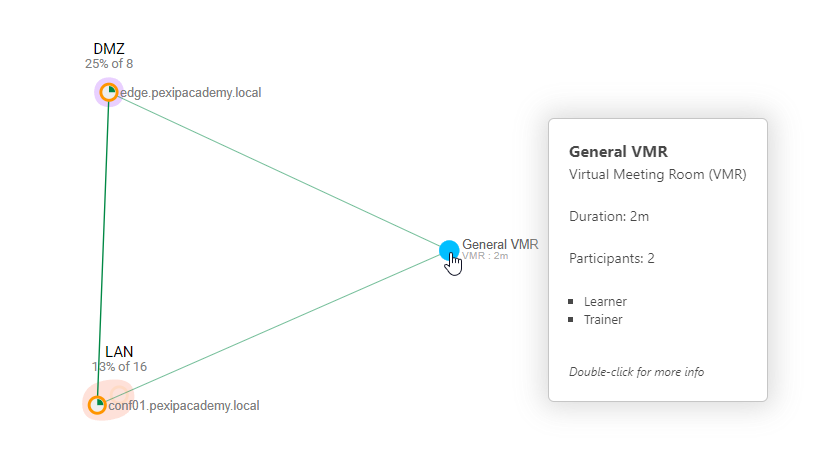
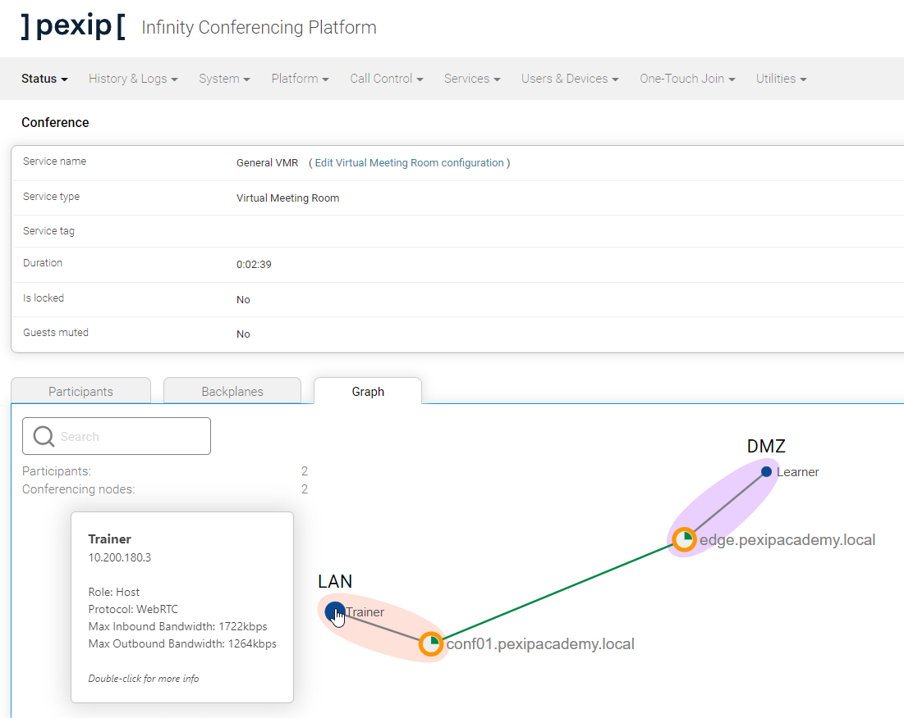
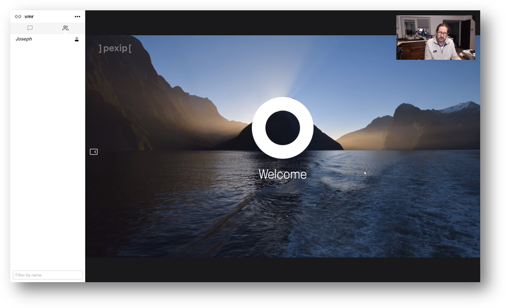
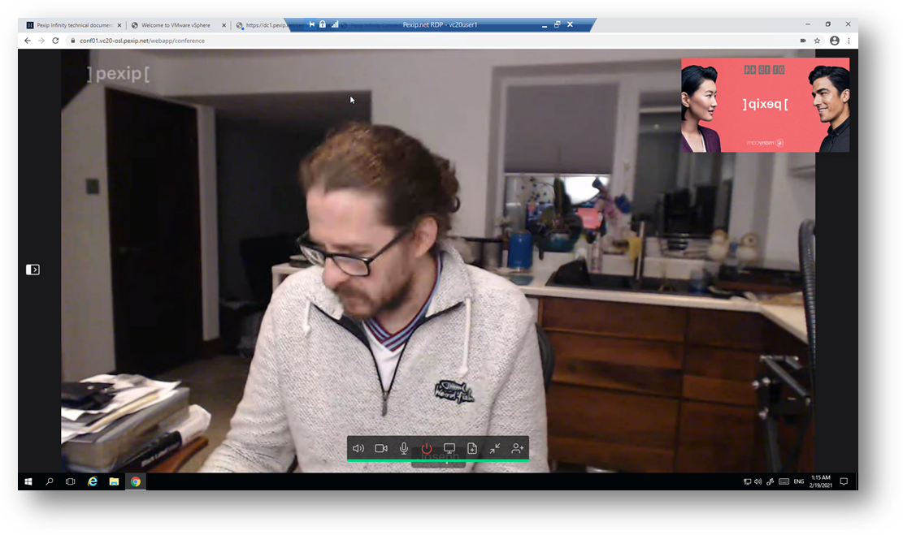

Suggested completion time: 15 minutes
Use section #4.2 of the lab sheet.
Place different calls into the VMR service. Ensure that you make at least one call into the service through the LAN location (using the Jumpbox), and place another call into the same service through the DMZ location simultaneously (using your machine or mobile).
It isn't straightforward to connect multiple devices to an Infinity service using internal and external locations. In the next lab, we will make this easier for you by giving you some PexEPs (Pexip Endpoints) that you can use to place calls into the different locations.
Check your system against the screenshots of the calls in operation at the same time. Show Live View from the Management Node, and drill down into the VMR call service. It’s also good to show a screenshot of the actual call from the end user’s point of view, for example:
This image shows a similar Live View to the Test Call service you saw previously. However, note that the circle's colour representing the service instances are different (light blue for a VMR service, light green for the Test Call service). Also, note that as you hover over the VMR service, you see a line connecting the nodes in the different locations. This line represents the backplane over which media is sent between nodes.

Drilling down in the VMR service instance, you will see a clearer indication of what is going on. The Trainer is connected to an internal node in the LAN location, and the Learner is connected to the edge node in the DMZ location.
Both nodes are in the transcoding role, so media is terminated and decoded when coming from the endpoint, then mixed and encoded when sent to the endpoint. Both endpoints connect using an alias associated with the VMR service, so Infinity automatically joins the locations and endpoints together. The connection is known as a backplane and allows all users to experience a single conference view, no matter where they are based. This ability to handle distributed conferences is the fundamental building block of an Infinity system.
Lastly, note the summary information you see as you hover different objects in Live View. For example, the image shows a summary of the Trainer participant, detailing signalling protocol, IP address, role within the VMR and signalled bandwidth. You can get other details about the conference by hovering over other elements or double-clicking to drill down further.


